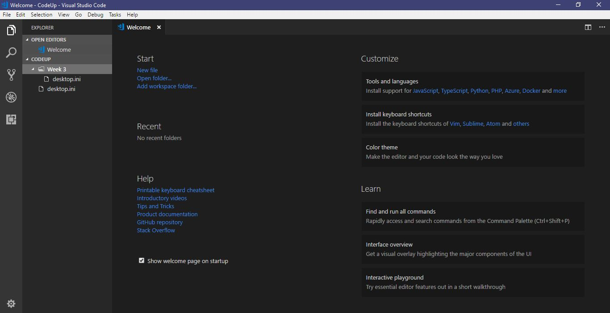

I will be using VSCode as my editor since I am already using it for CIT94. Previously I was using JetBrains’ Webstorm, which I did enjoy using and didn't have any problems with. In my experience with VSCode so far, it has a lot on Webstorm, it is much more lightweight. Webstorm seemed a lot clunkier in retrospect. At first, I had a problem since it didn't autosave, but I realized that all you had to do was turn that option on. Setting up Google Drive was also pretty easy, though it did require restarting my laptop. VSCode does also seem easier to customize than Webstorm. It will take a while to learn all of VSCode’s tricks to use it to its full potential. It took me a while to learn the tricks with Webstorm and it will take some effort to not confuse those features with VSCode’s features. Below is a screenshot of the UI of VS Code.
